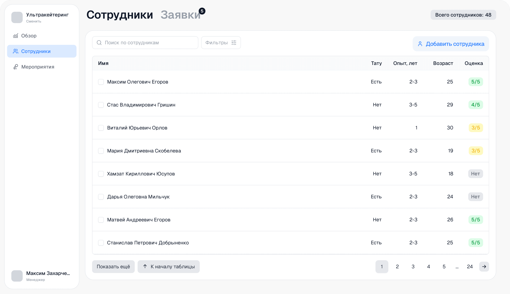
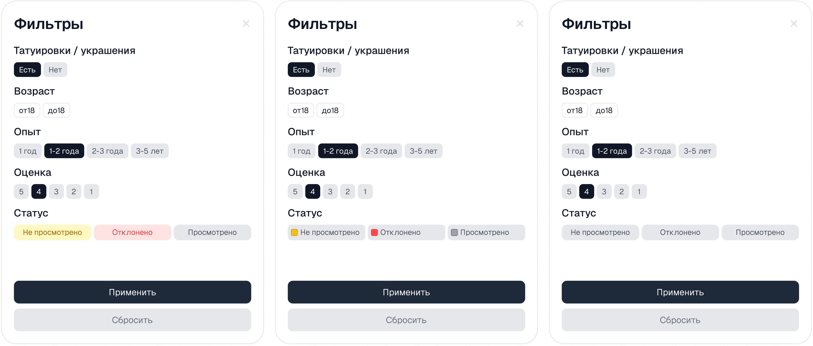
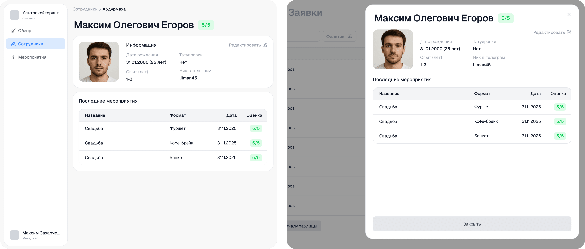
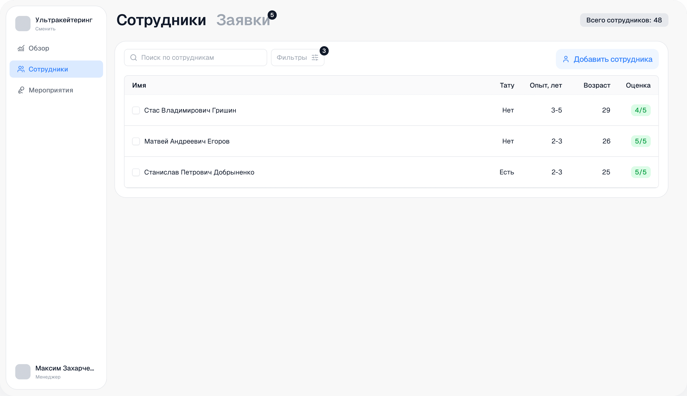
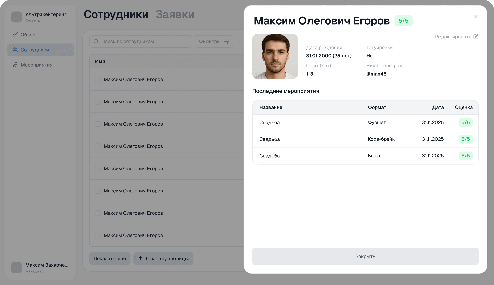
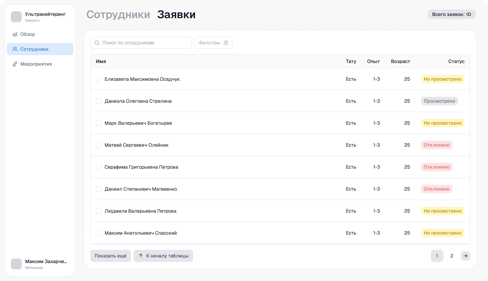
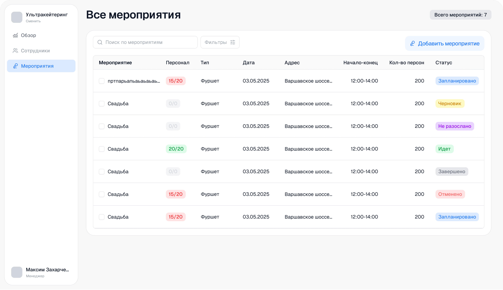
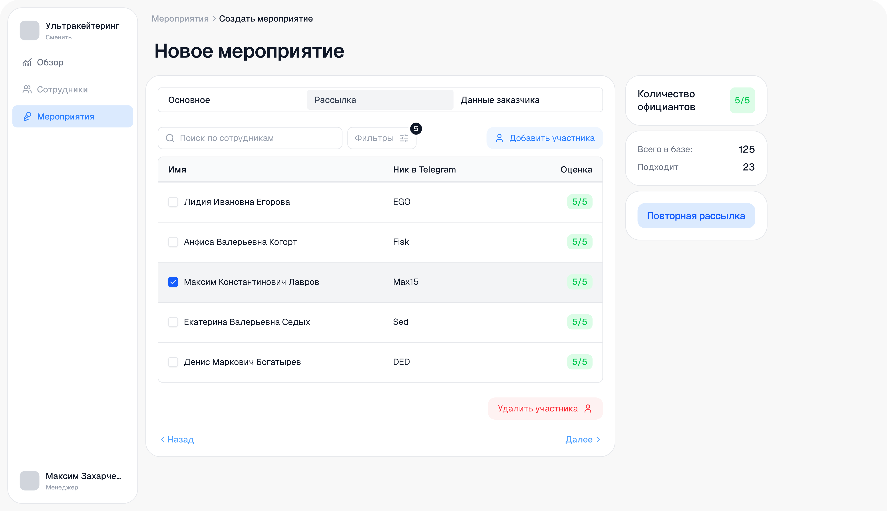

- Поиск кандидатов разбросан по мессенджерам и соцсетям
- Коммуникация с кандидатами неорганизованная, в разных каналах
- Необходимо регулярно проверять статус готовности сотрудников
- Важно следить за укомплектованностью; недобора быть не должно
Staff Admin Panel
Внутренний B2B-продукт для управления линейным персоналом на ивентах

Контекст
Инструмент для ивент-агентств и кейтеринговых компаний
Staff Admin Panel — внутренний продукт для управления сложными событиями и снижения операционных рисков. Менеджеры набирают персонал, контролируют укомплектованность мероприятий и отслеживают посещаемость.
Проблема
Набор персонала разбросан по мессенджерам, контроль — вручную
Для набора 20 официантов нужно просмотреть около 200 кандидатов, учитывая возможность неявки. Поиск ведётся в разных соцсетях и мессенджерах, коммуникация хаотична, а статус готовности сотрудников приходится проверять вручную.
Цель
Сократить время менеджера на поиск и контроль персонала
Собрать базу сотрудников в единой системе, автоматизировать рассылку приглашений на мероприятия и отслеживание подтверждений.
Ограничения
MVP в сжатые сроки
Формат запуска MVP подразумевал сжатые сроки разработки всего продукта целиком. Это влияло на приоритизацию фич и глубину проработки каждого сценария.
Research
Интервью с менеджерами компании-заказчика
Провёл интервью на площадке, где должно было пройти тестирование. Выявил ключевые болевые точки процесса.
Гипотезы
Сформулировали три проверяемых предположения
H1
Если сделать регистрацию линейного персонала через ТГ-бот, а проверку анкет — с админ-панели, то время менеджера на набор сократится.
H2
Вывод важных данных по мероприятию в виде статистики позволит менеджеру сразу видеть, на какое событие стоит обратить внимание.
H3
Если создать автоматическую систему подтверждения за 24 часа и 12 часов до мероприятия, процент no-show понизится.
Метрики
Определили, как будем измерять успех
% укомплектованности
Доля мероприятий, подготовленных к старту
No-show rate
% подтвердивших, но не вышедших на смену
Без «красных зон»
Доля событий без недобора за 12 часов до старта
Тестирование
Менеджеры протестировали первые макеты
После интервью и составления гипотез создали первые макеты. Менеджеры прошли тестирование, после которого были внесены правки.
Варианты фильтрации — менеджеры выбрали 2-й вариант с визуальным якорем

Карточка сотрудника — выбрали 2-й вариант, карточка поверх таблицы

Решение
Единая панель для управления персоналом и мероприятиями
Два раздела: Сотрудники и Мероприятия. Менеджер набирает базу через ТГ-бот, фильтрует кандидатов, рассылает приглашения и отслеживает укомплектованность в реальном времени.
Сотрудники — общая база

Фильтрация по параметрам

Карточка сотрудника

Заявки на вступление в базу

Мероприятия — все события

Рассылка приглашений через Telegram
Что не сработало
Telegram-расписание не снизило no-show
Идея присылать расписание в Telegram и этим снижать срывы частично провалилась: на мероприятиях сотрудникам часто нельзя пользоваться телефоном. Пришлось смещать фокус на подтверждения заранее и контрольные точки до события.
Статус
Заморожен из-за нехватки инвестиций
Продукт был готов к пилоту на мероприятиях заказчика, но заморожен. Опыт дал понимание того, как важно тестировать гипотезы в реальном контексте — некоторые предположения не сработали именно из-за специфики среды.